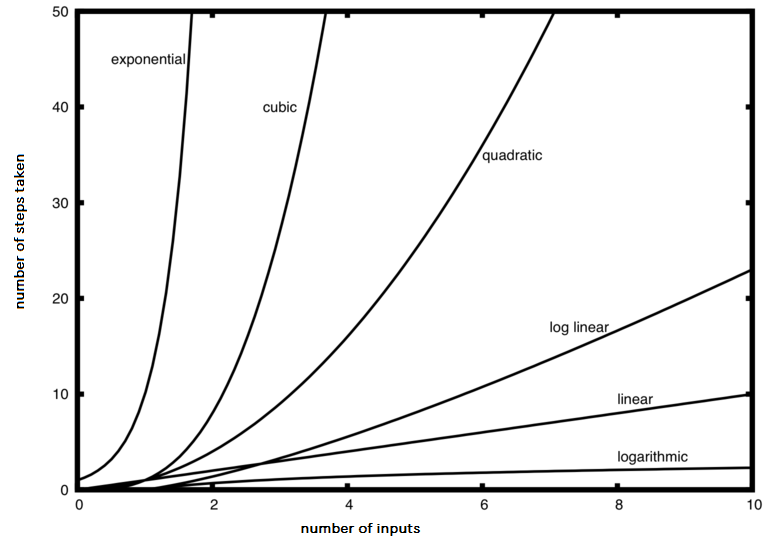
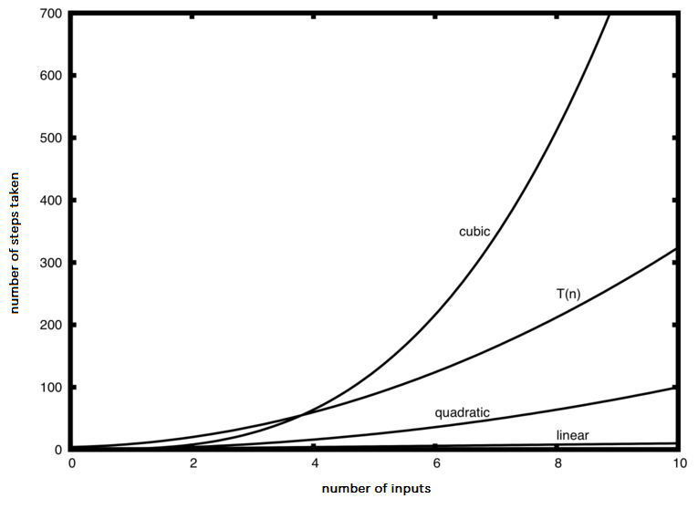

When trying to characterize an algorithms efficiency in terms of execution time, independent of any particular program or computer, it is important to quantify the number of operations or steps that the algorithm will require. If each of these steps is considered to be a basic unit of computation, then the execution time for an algorithm can be expressed as the number of steps required to solve the problem. Deciding on an appropriate basic unit of computation can be a complicated problem and will depend on how the algorithm is implemented.
A good basic unit of computation for comparing the summation algorithms shown earlier might be to count the number of assignment statements performed to compute the sum. In the function sumOfN, the number of assignment statements is 1 (\(theSum = 0\)) plus the value of n (the number of times we perform \(theSum=theSum+i\)). We can denote this by a function, call it T, where \(T(n)=1 + n\text{.}\) The parameter n is often referred to as the size of the problem, and we can read this as T(n) is the time it takes to solve a problem of size n, namely 1+n steps.
In the summation functions given above, it makes sense to use the number of terms in the summation to denote the size of the problem. We can then say that the sum of the first 100,000 integers is a bigger instance of the summation problem than the sum of the first 1,000. Because of this, it might seem reasonable that the time required to solve the larger case would be greater than for the smaller case. Our goal then is to show how the algorithms execution time changes with respect to the size of the problem.
Computer scientists prefer to take this analysis technique one step further. It turns out that the exact number of operations is not as important as determining the most dominant part of the \(T(n)\) function. In other words, as the problem gets larger, some portion of the \(T(n)\) function tends to overpower the rest. This dominant term is what, in the end, is used for comparison. The order of magnitude function describes the part of \(T(n)\) that increases the fastest as the value of n increases. Order of magnitude is often called Big-O notation (for order) and written as \(O(f(n))\text{.}\) It provides a useful approximation to the actual number of steps in the computation. The function \(f(n)\) provides a simple representation of the dominant part of the original \(T(n)\text{.}\)
In the above example, \(T(n)=1+n\text{.}\) As n gets large, the constant 1 will become less and less significant to the final result. If we are looking for an approximation for \(T(n)\text{,}\) then we can drop the 1 and simply say that the running time is \(O(n)\text{.}\) It is important to note that the 1 is certainly significant for \(T(n)\text{.}\) However, as n gets large, our approximation will be just as accurate without it.
As another example, suppose that for some algorithm, the exact number of steps is \(T(n)=5n^{2}+27n+1005\text{.}\) When n is small, say 1 or 2, the constant 1005 seems to be the dominant part of the function. However, as n gets larger, the \(n^{2}\) term becomes the most important. In fact, when n is really large, the other two terms become insignificant in the role that they play in determining the final result. Again, to approximate \(T(n)\) as n gets large, we can ignore the other terms and focus on \(5n^{2}\text{.}\) In addition, the coefficient \(5\) becomes insignificant as n gets large. We would say then that the function \(T(n)\) has an order of magnitude \(f(n)=n^{2}\text{,}\) or simply that it is \(O(n^{2})\text{.}\)
Although we do not see this in the summation example, sometimes the performance of an algorithm depends on the exact values of the data rather than simply the size of the problem. For these kinds of algorithms we need to characterize their performance in terms of best case, worst case, or average case performance. The worst-case performance refers to a particular data set where the algorithm performs extremely poorly. At the same time, a different data set for the exact same algorithm might have outstanding performance. However, in most cases the algorithm performs somewhere in between these two extremes (average case). It is important for a computer scientist to understand these distinctions so they are not misled by one particular case.
A number of very common order of magnitude functions will come up over and over as you study algorithms. These are shown in Table2.3.1. In order to decide which of these functions is the dominant part of any \(T(n)\) function, we must see how they compare with one another as n gets large.
Table2.3.1.Common Big-O Functions
f(n)
Name
\(1\)
Constant
\(\log n\)
Logarithmic
\(n\)
Linear
\(n\log n\)
Log Linear
\(n^{2}\)
Quadratic
\(n^{3}\)
Cubic
\(2^{n}\)
Exponential
Figure2.3.2 shows graphs of the common functions from Table2.3.1. Notice that when n is small, the functions are not very well defined with respect to one another. It is hard to tell which is dominant. However, as n grows, there is a definite relationship and it is easy to see how they compare with one another.

This figure shows graphs of the common functions from Table2.3.1. When n is small, the functions are not very well defined with respect to one another. It is hard to tell which is dominant. However, as n grows, there is a definite relationship and it is easy to see how they compare with one another.
Figure2.3.2.Common Big-O Functions
As a final example, suppose that we have the fragment of C++ code shown in Task2.3.1.a. Although this program does not really do anything, it is instructive to see how we can take actual code and analyze performance.
Exploration2.3.1.Analysis Example.
(a)C++ Implementation.
#include <iostream>
using namespace std;
int main(){
int a=5;
int b=6;
int c=10;
for (int i=0; i<n; i++){
for (int j=0; j<n; j++){
int x = i * i;
int y = j * j;
int z = i * j;
}
}
for (int k = 0; k < n; k++){
int w = a*k + 45;
int v = b*b;
}
int d = 33;
return 0;
}
(b)Python Implementation.
def main():
a=5
b=6
c=10
for i in range(n):
for j in range(n):
x = i * i
y = j * j
z = i * j
for k in range(n):
w = a*k + 45
v = b*b
d = 33
main()
The number of assignment operations is the sum of four terms. The first term is the constant 3, representing the three assignment statements at the start of the fragment. The second term is \(3n^{2}\text{,}\) since there are three statements that are performed \(n^{2}\) times due to the nested iteration. The third term is \(2n\text{,}\) two statements iterated n times. Finally, the fourth term is the constant 1, representing the final assignment statement. This gives us \(T(n)=3+3n^{2}+2n+1=3n^{2}+2n+4\text{.}\) By looking at the exponents, we can easily see that the \(n^{2}\) term will be dominant and therefore this fragment of code is \(O(n^{2})\text{.}\) Note that all of the other terms as well as the coefficient on the dominant term can be ignored as n grows larger.

Figure2.3.3.Comparing \(T(n)\) with Big-O Functions
Figure2.3.3 shows a few of the common Big-O functions as they compare with the \(T(n)\) function discussed above. Note that \(T(n)\) is initially larger than the cubic function. However, as n grows, the cubic function quickly overtakes \(T(n)\text{.}\) It is easy to see that \(T(n)\) then follows the quadratic function as \(n\) continues to grow.
Reading QuestionsReading Questions
1.
If the exact number of steps is \(T(n)=2n+3n^{2}-1\) what is the Big O?
O(2n)
No, 3n2 dominates 2n. Try again.
O(n)
No, n2 dominates n. Try again.
O(3n2)
No, the 3 should be omitted because n2 dominates.
O(n2)
Right!
More than one of the above
No, only one of them is correct. Try again.
2.
Without looking at the graph above, from top to bottom order the following from most to least efficient.
constant
logarithmic
linear
log linear
quadratic
cubic
exponential
3.
Which of the following statements is true about the two algorithms? Algorithm 1: 100n + 1 Algorithm 2: n^2 + n + 1
Algorithm 1 will require a greater number of steps to complete than Algorithm 2
This could be true depending on the input, but consider the broader picture
Algorithm 2 will require a greater number of steps to complete than Algorithm 1
This could be true depending on the input, but consider the broader picture
Algorithm 1 will require a greater number of steps to complete than Algorithm 2 until they reach the crossover point
Correct!
Algorithm 1 and 2 will always require the same number of steps to complete
No, the efficiency of both will depend on the input
4.
The Big O of a particular algorithm is \(O(\log_{2}n)\text{.}\) Given that it takes 2 seconds to complete the algorithm with 3 million inputs; how long would it take with 4 million inputs?
3.444
Incorrect. Try again.
2.53
Correct!
2
Incorrect. Try again.
4
Incorrect. Try again.
More than one of the above
No, only one of them is correct. Try again.
5.
The Big O of a particular algorithm is \(O(\log_{2}n)\text{.}\) Given that it takes 2 seconds to complete the algorithm with 3 million inputs; how long would it take with 10 million inputs?
3.444
Incorrect. Try again.
2.53
Incorrect. Try again.
2
Incorrect. Try again.
4.2
Right!
More than one of the above
No, only one of them is correct. Try again.
6.
The Big O of a particular algorithm is \(O(n^{3})\text{.}\) Given that it takes 2 seconds to complete the algorithm with 1000 inputs; how long would it take with 2000 inputs?
2000
Incorrect. Try again. Think about what happens to the time as more operations occur.
3000
Incorrect. Try again. Think about what happens to the time as more operations occur.
16
Correct!
1500
Incorrect. Try again. Think about what happens to the time as more operations occur.
More than one of the above
No, only one of them is correct. Try again.
7.
The Big O of a particular algorithm is \(O(n^{3})\text{.}\) Given that it takes 2 seconds to complete the algorithm with 1000 inputs; how long would it take with 10,000 inputs?
2000
Right!
3000
Incorrect. Try again. Think about what happens to the time as more operations occur.
16
Incorrect. Try again. Think about what happens to the time as more operations occur.
1500
Incorrect. Try again. Think about what happens to the time as more operations occur.